关于我
我的照片:

小小个，鬼精鬼精的，下面是我的标签哈
桂平美食与小吃
桂平猪脚粉
猪脚粉制作的猪脚肥而不腻，皮略脆，不软不硬，是很多桂平人的最爱。 猪脚性平，味甘咸，具有补血益气、通乳、去毒功效，适合气虚体弱者食用。猪脚骨中的胶质含有钙、磷等矿物质，能强化人的牙齿和骨骼。搭配粉面一起食用，更能起到补充体力和补血益气的作用。
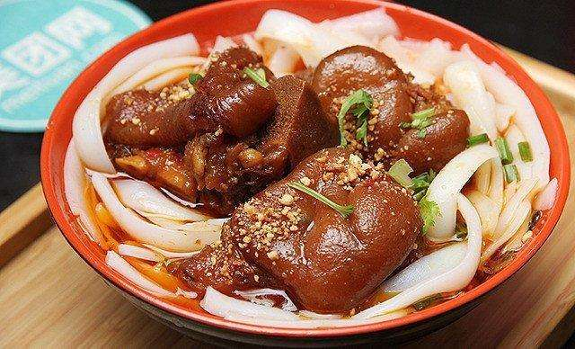 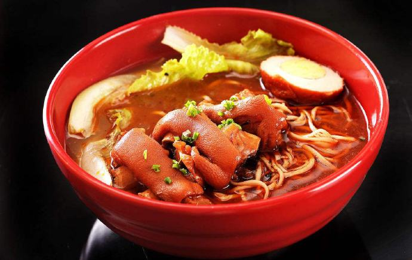粉利
粉利是广西传统小吃之一，主要分布桂北，桂南地区，“粉利”寓意来年有个好兆头之意。小吃介绍粉利是原生态的米制品，经过石磨磨成浆，然后经过蒸煮而成。桂平一般会在过年吃的。
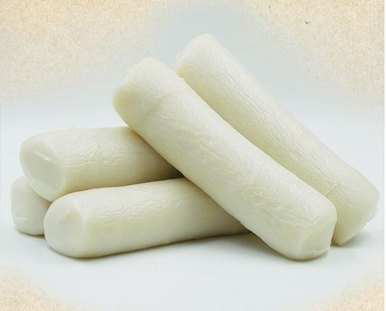 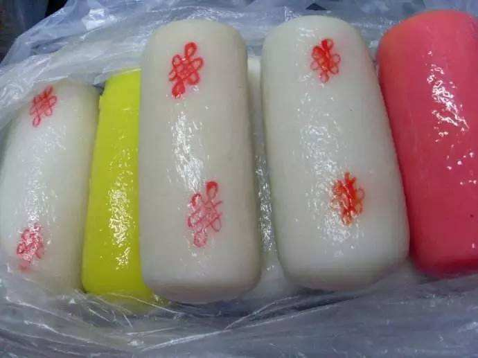糍粑
糍粑，一种平凡的食物。在我国，只要是产米的地区，几乎随处可见有当地特色的糍粑。桂平是产粮大市，桂平人做的糍粑，最具传统特色。桂平人把做糍粑形象的叫做“整”糍粑。水煮糍粑，在桂平也有人叫“米果”或叫“茶果”，经过不断搓揉糯米粉成为面团，再放上苦瓜、猪肉、腐竹、豆角，也可以放糖，做成甜的，最后用老火大锅水煮出锅即可品尝。据说，这种小吃，在桂平已有上千年的历史。
> 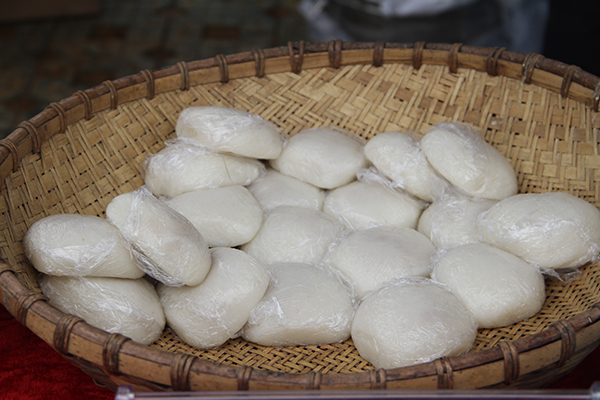 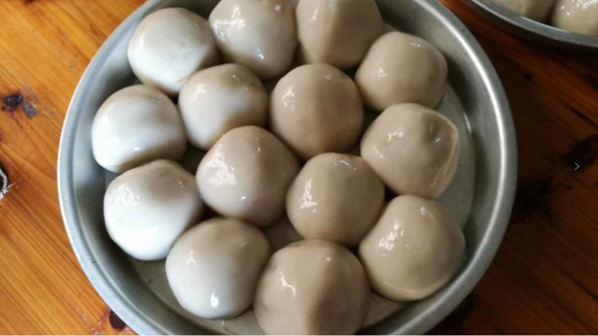肠粉
桂平卷粉和广东的肠粉类似，由于当地大米和水质的不同，蒸制出来的卷粉更薄口感也更为劲道，再搭配乳汁和花生末、酸豆角，爽滑鲜嫩，令人欲罢不能。
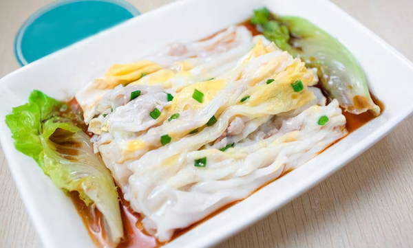 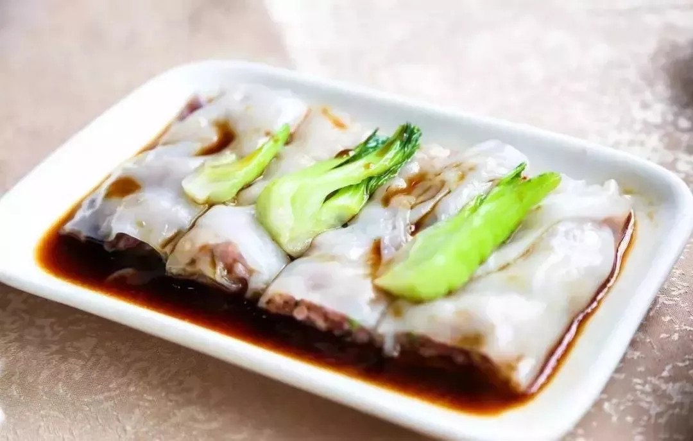豆腐酿
豆腐酿，相信很多外地人都吃过，金黄色的油果里包着糯米，打开锅盖后涌出的清香，格外诱人。
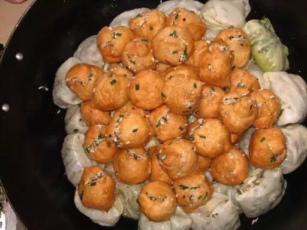 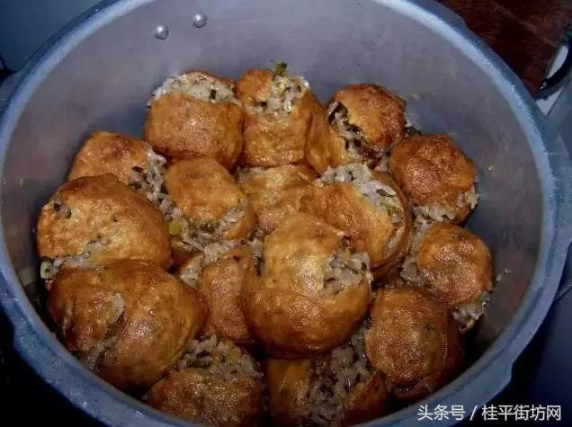炸葱饼
在桂平有很多卖葱饼的小摊贩，堆满着炸葱饼。葱饼的制作就是在米浆中加入香葱等馅料，用特制的圆形铁盘承装后放入油锅，炸至金黄酥脆，它的特点是外酥内嫩，口感劲道。
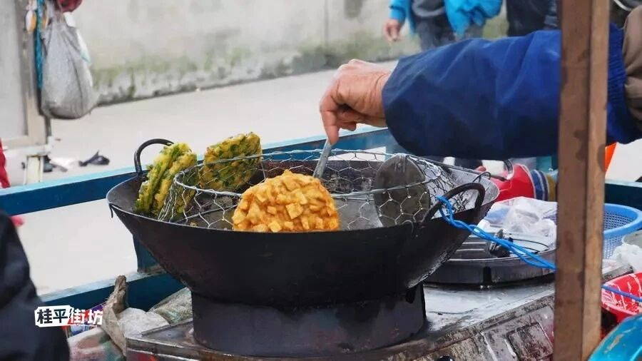 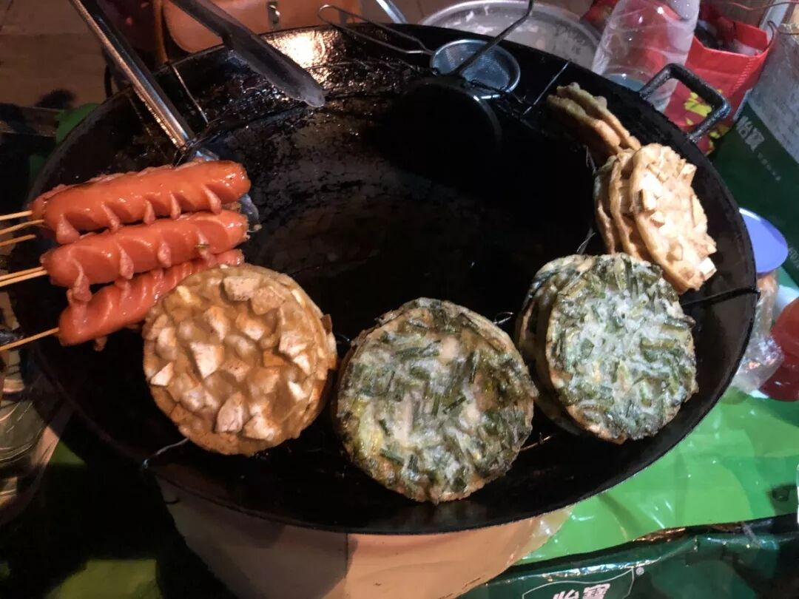酸野
这个外地人会直接联想到四川的泡菜，但实际上口感上的差异还是比较大的，各家的做法不同，有用糖水泡的冰糖酸，也有老卤水腌制的老坛酸。但口感上都是以，酸甜爽脆为主要特点。，
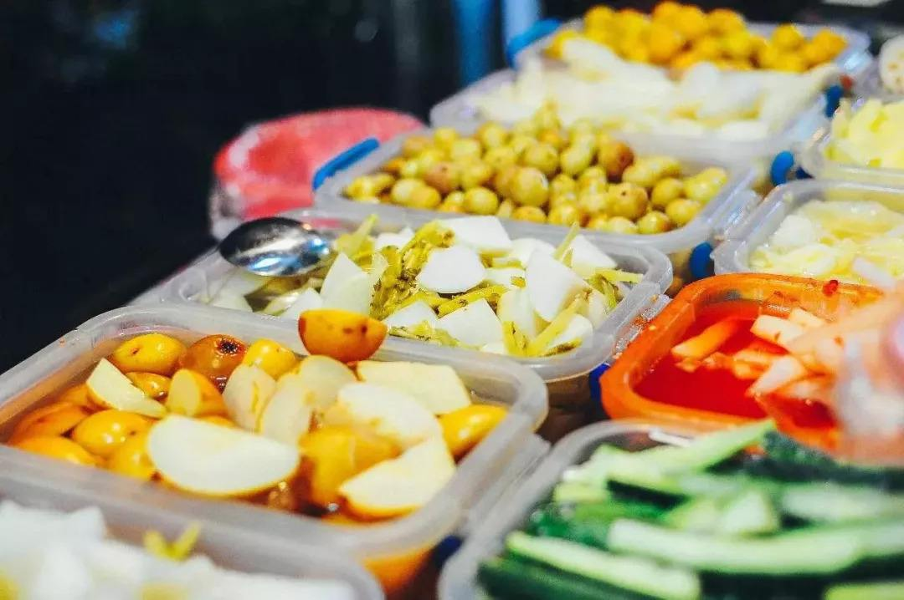 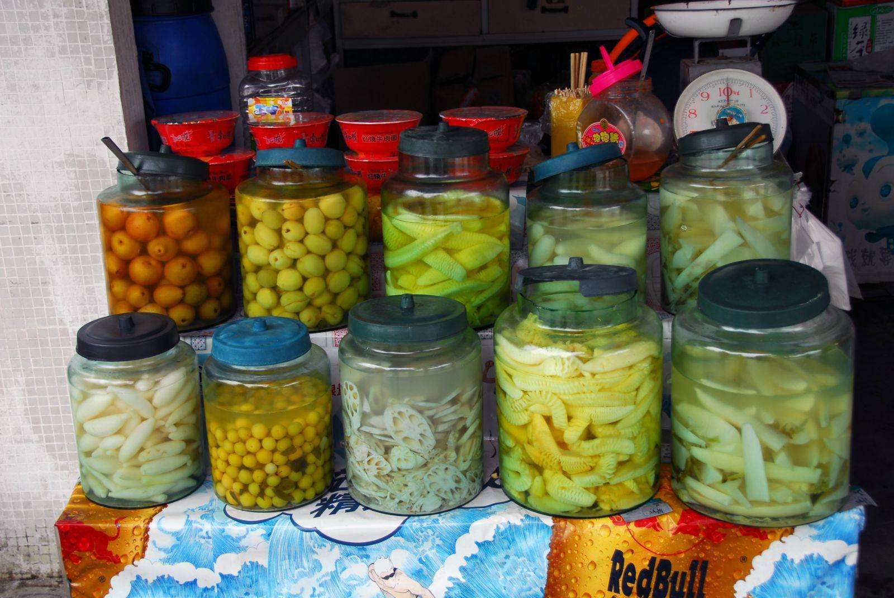凉粉
桂平的夏天，街头巷尾都能看到骑三轮车卖凉粉的小摊，其实桂平的凉粉有黑凉粉和白凉粉，根据个人喜好可以任意搭配，在淋上熬制的糖水，冰凉爽滑，祛属必备。
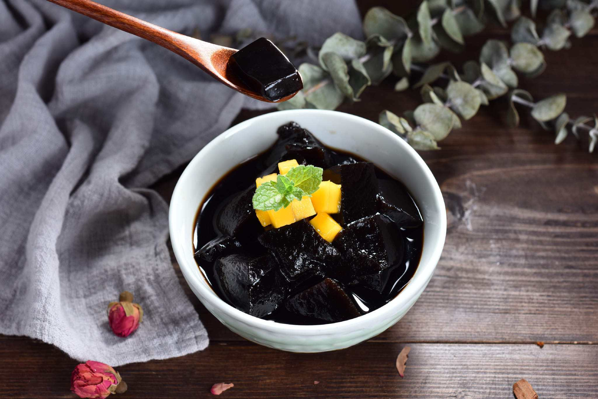 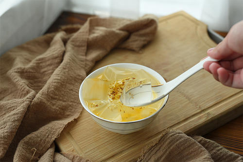油糍
在桂平，一般的小吃店里，或者过年前人们家中，都少不了油糍的身影。桂平的油糍是用糯米粉滚上芝麻后炸成空心大圆，口感酥脆香甜，美味触手可及。
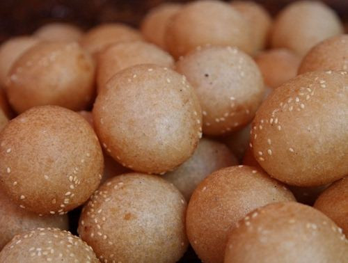 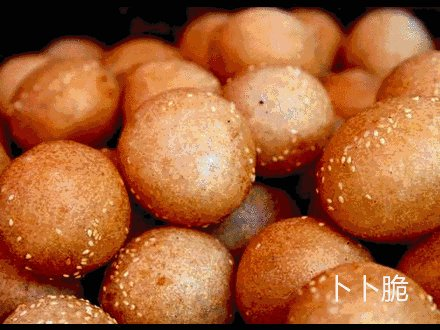